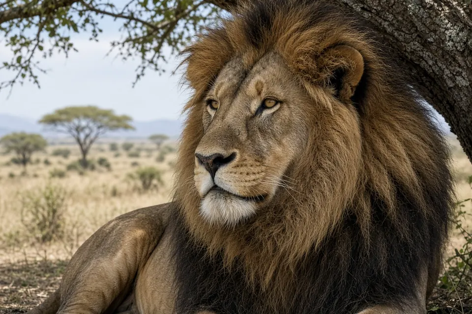

Home › Blog › Can lions and tigers interbreed?
Can lions and tigers interbreed? Ligers and tigons explained
Yes, but only where people keep the two species together. A liger, the offspring of a male lion and a female tiger, grows far larger than either parent and is the largest cat alive. A tigon, the offspring of a male tiger and a lioness, does not get that growth boost and stays closer to ordinary lion or tiger size. Both exist only in captivity: accredited zoos in North America do not breed them, and conservation biologists say they have no conservation value.
The short answer
| Hybrid | Parents | Size versus parents |
|---|---|---|
| Liger | Male lion × female tiger | Much larger. Guinness World Records lists Hercules, a male liger at Myrtle Beach Safari, South Carolina, as the largest living cat: 418.2 kg (922 lb), 3.33 m (131 in) long and 1.25 m (49 in) at the shoulder. |
| Tigon | Male tiger × female lion | Not larger. Guinness World Records notes that tigons, from the reciprocal cross, are often smaller than ligers and closer to normal lion or tiger size. |
Why do ligers grow so much bigger?
The leading explanation is genomic imprinting, a process that switches some genes on or off depending on whether they came from the mother or the father, before fertilisation even happens. The Tech Interactive's Ask a Geneticist team explains that in mice, the growth gene Igf2 is active only on the copy inherited from the father; the maternal copy is silenced. Lion sperm appears to carry a strong "grow large" signal, which lion eggs normally counteract with an opposing "do not grow too much" signal of their own. Tiger eggs do not carry that same counteracting signal, so when they combine with lion sperm in a liger, the growth signal goes unchecked and the cub grows much larger than either parent.
Run the cross the other way and the effect disappears. A tigon inherits a tiger sperm's imprinting pattern, geared to ordinary tiger growth, combined with a lion egg, so there is no unusual growth signal to begin with. The Tech Interactive's explainer adds that lions live in prides where several males may mate with the same female, so a male lion's genes benefit from pushing his own cubs to grow larger and outcompete half siblings; tigers are solitary and do not face that same competitive pressure, so male tigers carry no comparable "grow large" signal.

Where does this happen?
Only in captivity. Wild lions live mainly in sub-Saharan Africa, with a single small population in and around Gir forest in Gujarat, India; wild tigers live only in parts of South, Southeast and East Asia and the Russian Far East, and Gir forest is not part of that range. See where lions live and where tigers live. Because the two species do not share territory anywhere today, ligers and tigons are never found in the wild; every one on record has been bred by people who kept a lion and a tiger together.
Why don't zoos breed them?
The Association of Zoos and Aquariums, which accredits zoos across North America, does not approve of breeding ligers or other big cat hybrids, and no AZA accredited zoo does so, National Geographic reports. Lion researcher Craig Packer of the University of Minnesota Lion Research Center told the magazine that hybrids have no relevance to conservation, and National Geographic Society conservation scientist Luke Dollar called crossbreeding big cat species unethical.
The Big Cat Sanctuary Alliance's position paper on big cat hybrids states that crossing species has no conservation or education value and lists serious health and welfare problems linked to it, including gigantism and unsustainable growth in ligers, and high neonatal mortality and shortened lifespans in tigons. For these reasons, legitimate sanctuaries that are members of the alliance do not breed hybrid cats, and the animals seen in the media are typically kept at private, for profit attractions rather than accredited zoos or true sanctuaries.
Frequently asked questions
Can lions and tigers mate in the wild?
No. Wild lions and wild tigers do not share any territory today, so hybrids such as ligers and tigons occur only where people keep the two species together in captivity.
Is a liger bigger than a tiger?
Yes, typically. The largest documented liger, Hercules, weighs 418.2 kg (922 lb), well above the largest reliably recorded wild tigers. Tigons do not show the same size boost.
Why are ligers so much bigger than tigons?
Genomic imprinting. A male lion's sperm appears to carry an unchecked growth signal that a tiger egg cannot counteract, producing oversized ligers. The reverse cross, a tigon, does not inherit that unchecked signal.
Do accredited zoos breed ligers?
No. The Association of Zoos and Aquariums does not approve of breeding hybrid big cats, and conservation biologists say hybrids have no conservation value.
Cite this page
APA: BigCatWise. (2026, November 18). Can lions and tigers interbreed?. https://bigcatwise.com/blog/can-lions-and-tigers-interbreed.html
MLA: "Can lions and tigers interbreed?." BigCatWise, 18 Nov. 2026, bigcatwise.com/blog/can-lions-and-tigers-interbreed.html.
Chicago: BigCatWise. "Can lions and tigers interbreed?." Last modified November 18, 2026. https://bigcatwise.com/blog/can-lions-and-tigers-interbreed.html.
Please check the date you accessed the page and adjust to your teacher's or journal's style guide.
Sources
- Guinness World Records: Largest living cat (Hercules the liger)
- The Tech Interactive, Ask a Geneticist: Why are ligers so big?
- National Geographic: Cat experts say ligers and other designer hybrids are pointless and unethical
- Big Cat Sanctuary Alliance: Position paper, big cat hybrids and breeding big cats for rare colors
- IUCN SSC Cat Specialist Group: Lion
- IUCN SSC Cat Specialist Group: Tiger
Figures are rounded summaries of the sources above. Wild populations are hard to count, so estimates change as new surveys are published.